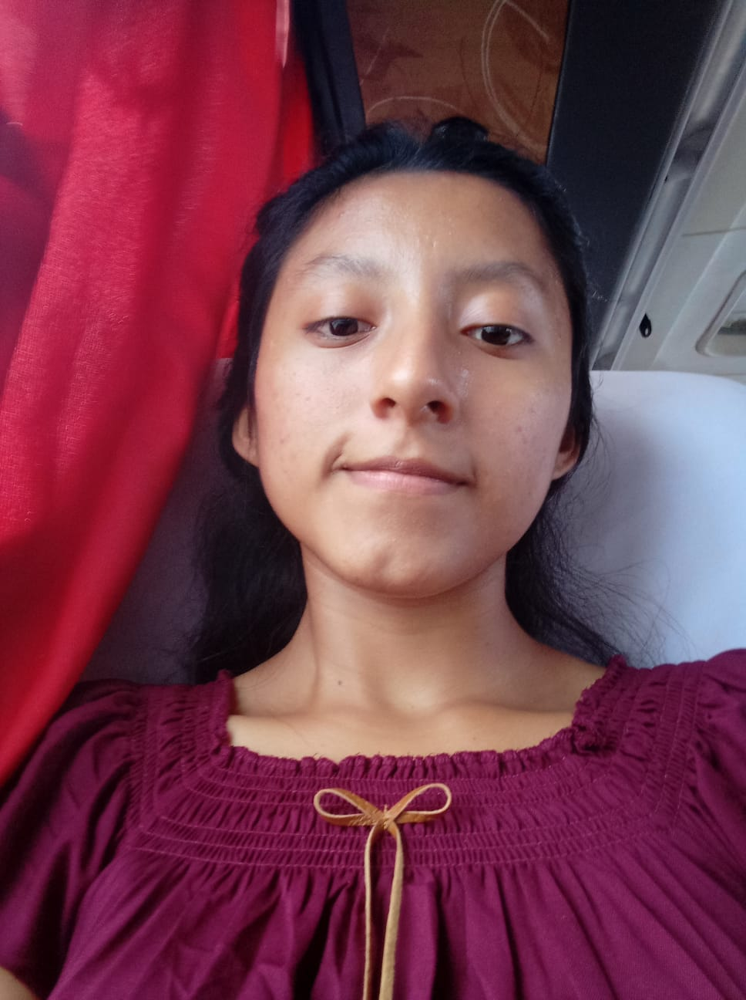

YULISA TEPO C. | WDD 130

Hi! I'm sister Yulisa Tepo from Peru, and I would love to introduce myself on my page 😊!
I'm 19 years old, currently an online student of programming (HTML and CSS) at Brigham Young University - Idaho. I love the Gospel of Jesus Christ and His church, I'm member since 2018 and I'm really happy for that decition in my life! On the other hand, my highlight hobby is to learn human languages. I practice English every day, I have been studying english for the past 3 years already, and I'm studying Korean slowly on my own for now. Some of my dreams are to be a profesional Web Developer while visiting different cites or even countries, be a missionary, get marriage some day and help my parents as much as I can.